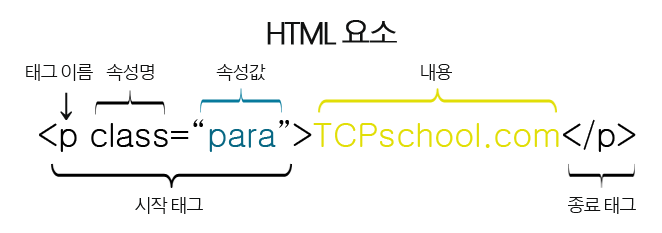
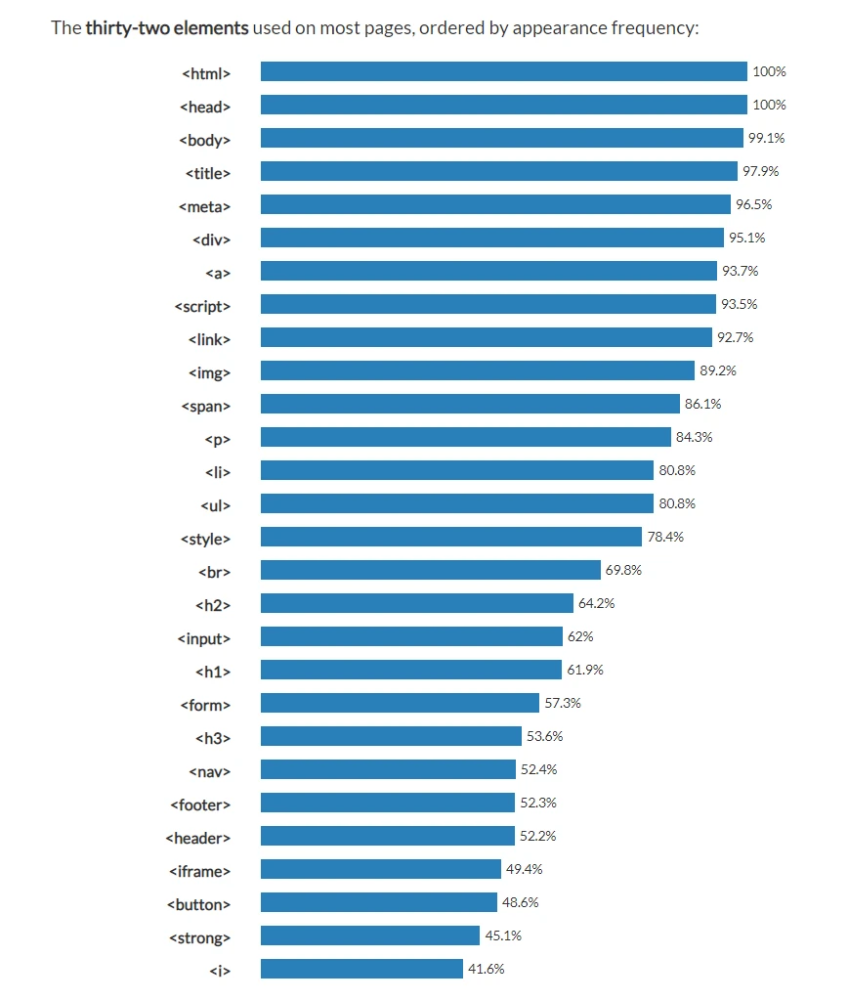

태그는 대부분 <시작태그>와 < / 종료태그>가 존재합니다.
" < img > < br > < hr > "등과 같이 종료태그 없이 시작태그만을 가지는 태그를 빈태그(empty tag)라 함.
태그는 태그이름, 속성명, 속성값, 종료태그로 구성되어 있습니다

H는 제목 글자이면 1~6으로 크기를 정할 수 있습니다. H1이 최대값 입니다
br태그는 한줄 띄우기이고, hr은 밑줄을 긋습니다.
대부분의 태그가 정리된 곳. W3C
웹 페이지는 대부분 35개 이하의 태그로 작성되성 되는 경우가 대부분이며,
그 종류와 빈도는 아래의 그래프와 같다.

p태그는 한단락을 구성합니다.
"< b >"태그는 굵게 표시합니다.
"< strong >"태그는 강조합니다.
"< i >"태그는 글씨가 이탤릭체로 표시합니다.
"< em >"태그는 중요한 부분이라서 이탤릭체로 표현합니다.
"< mark >"태그는 형광펜 칠 합니다.
"< del >"태그는 취소선
"< u >"태그는 밑줄
웹에는 CSS라는 기술이 존재. HTML의 제한된 표현을 극복하기 위한 도구
CSS: 종속형 시트, Cascading Style Sheet 의미
첫 단락
두번째 단락
CSS 적용단락. margin-top:45px;
좀 더 넓어진 간격을 확인가능.
HTML를 잘 사용하는 것은 비즈니스 측면에서 이점 존재. 검색엔진에 잘 선택되는 것
웹의 핵심적 철학은 = 접근성. 웹페이지 코드는 공공재
부모 자식 목록
ol태그는 순서가 있는 목록 -> 번호순 기호 // ordered list
ul태그는 순서가 없는 목록 -> 말머리 기호 // unordered list
- 기본은 숫자 말머리
- 따로 입력하지 않아도
- 자동으로 번호를 배정합니다
순서대로 속성 값 type="A", "a", "I", "i"를 가짐
- 한국
- 북한
- 고기
- 채소
- 사립
- 공립
- 정의
- 비겁
역순정렬도 가능 reversed
- AAA
- ZZZ
ul 말머리 태그 예시